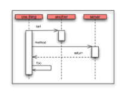
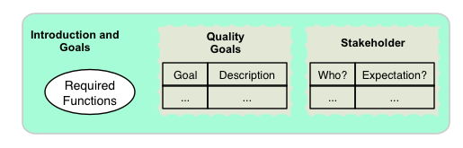
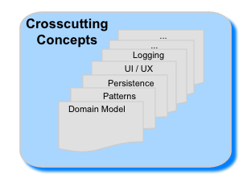
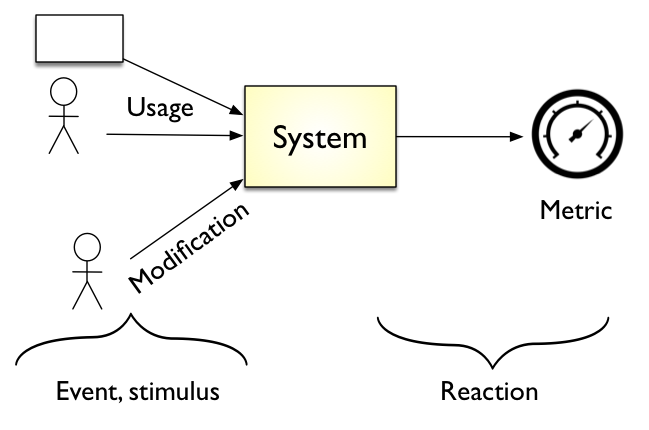

More than a template
Six recurring, interrelated activities, held together by constant learning and continuous feedback. They keep your architecture, your code and your stakeholders in sync, in agile, lean or formal projects alike.
The template answers where architecture information belongs; the method answers how you work to produce it. And arc42 does take a position on the how: six core activities, with no fixed order and highly interrelated, so the results of any one refine the others in the next increment.
Along the way it takes clear stances: clarify the most important quality requirements before anything else, structure the system along its domain, and choose the crosscutting concepts that actually make those quality goals achievable. Two principles run through all of it: learn constantly, and iterate with continuous feedback. None of these tasks is ever truly finished.

IT is a dynamic industry: new technologies, methods, libraries and frameworks appear all the time. To design, implement and operate systems responsibly, you need to assess their impact on your current system, which only works if independent learning becomes a fundamental habit.
Development teams need a robust foundation of goals, requirements and constraints to make targeted decisions. Architects contribute decisively here: by questioning quality requirements, categorizing functional requirements, and identifying technical risks.

Building a system out of smaller parts is one of the fundamental tasks of architecture. arc42 calls these parts building blocks, deliberately technology-neutral. This produces the static Building Block View, its dynamic counterpart, the Runtime View, and the interfaces that connect them with each other and the outside world.
Some decisions cut across the whole system: base technology and infrastructure, frameworks and libraries, recurring patterns, the approach to build, deployment, test and release. How is the UI structured? Where is persistent data stored? How are errors, logging and monitoring handled?

Coordinate decisions with the relevant stakeholders, solicit their feedback, and incorporate it where appropriate. Communicate intensively in person, and put decisions in writing as sparingly as possible: written documentation creates maintenance effort for every future change. The template supports both extremes, very sparse and very thorough.
Good design discussions are not enough: deviations from agreed decisions creep into source code, on purpose or by accident. Look into the code (reviews), find the gold pieces where developers improved on the design, coach where a concept was misunderstood. And at regular intervals, take a methodical look in the rear-view mirror: either your decisions still achieve the desired effect (great, move on), or weaknesses surface early enough to plan improvements.
arc42 proposes to clarify the most important quality requirements first, and to let them drive the crosscutting concepts of the architecture. Structure follows the domain, not the org chart or the framework of the week.
This simple feedback loop, decide, act, reflect, is the basis of every iterative process. Deciding and acting without reflection easily leads to missed goals and actionism.
